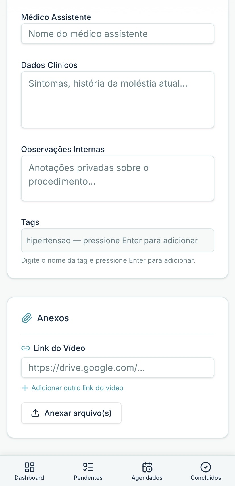

Painel médico claro
Resumo de pendentes, agendados e concluídos com busca por paciente, CPF ou tags.
Plataforma médica doctor-first
Medipath.AI ajuda médicos e secretárias a organizar solicitações, pacientes, documentos, autorizações, agendamentos e resultados em um fluxo claro: pendente, agendado e concluído.
Criado para a rotina real de consultórios, clínicas e equipes médicas.


Produto
Visualize procedimentos pendentes, agendados e concluídos, encontre pacientes rapidamente e acompanhe o que precisa de atenção antes de cada procedimento.
Resumo de pendentes, agendados e concluídos com busca por paciente, CPF ou tags.
Acompanhe a agenda e os detalhes principais mesmo fora do consultório.
Dados clínicos, hospital, convênio, contatos e status juntos em uma visão organizada.
Fluxo de trabalho
Medipath.AI mantém o caminho do procedimento simples para o médico e para a equipe.

Registre solicitações, dados clínicos, convênio, hospital e tags assim que o procedimento entra no fluxo.

Veja data, horário e hospital, com atalhos para contato e GPS antes do procedimento.

Acesse histórico, anexos e informações compartilháveis sem depender de lembretes soltos.
Recursos
Crie e atualize procedimentos com dados do paciente, contatos, convênio, informações clínicas e observações internas.
Médicos podem trabalhar sozinhos ou com secretárias que cadastram e organizam procedimentos em seu nome.
Guarde documentos, fotos, autorizações, links de vídeo e arquivos de apoio junto ao procedimento.
Use hashtags personalizadas para filtrar rapidamente prioridades, grupos clínicos ou rotinas internas.
Use atalhos de telefone, WhatsApp e GPS/Waze para comunicação e deslocamento antes dos procedimentos.
Compartilhe informações, resultados e anexos com outros médicos quando necessário.
Cadastro de procedimento
Cada procedimento reúne dados do paciente, informações clínicas, contatos, convênio, médico assistente, notas internas, tags e anexos em um único registro.


Programa Médicos Fundadores
Um grupo inicial de médicos será convidado para testar o Medipath.AI, enviar feedback e participar da evolução do produto.
Privacidade e confiança
Desenvolvido com atenção à privacidade e segurança de dados. LGPD em revisão.
Lista de acesso antecipado
Estamos selecionando médicos e clínicas para participar da primeira fase de lançamento e ajudar a evoluir uma ferramenta criada para a rotina real do consultório.
Cadastro recebido
Recebemos seu cadastro para a lista de acesso antecipado. Entraremos em contato durante as próximas ondas de lançamento.
Enquanto isso, acompanhe as novidades pelo nosso site.
Voltar ao início